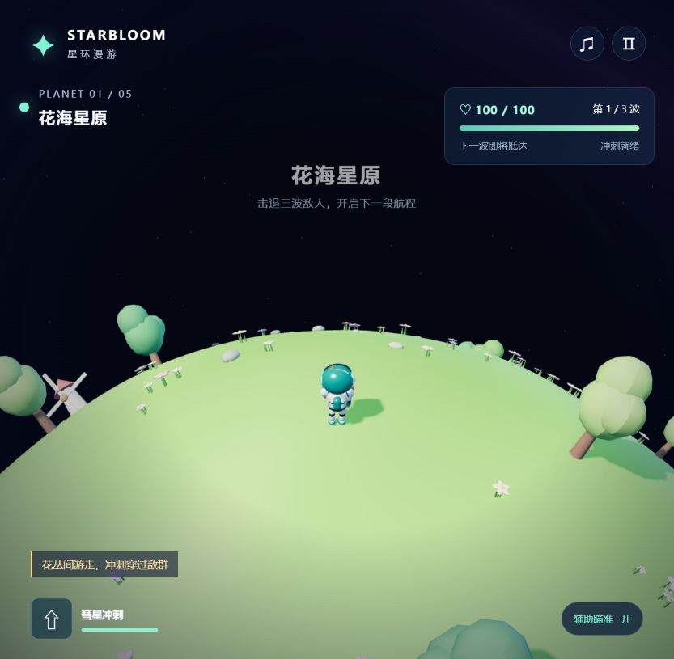
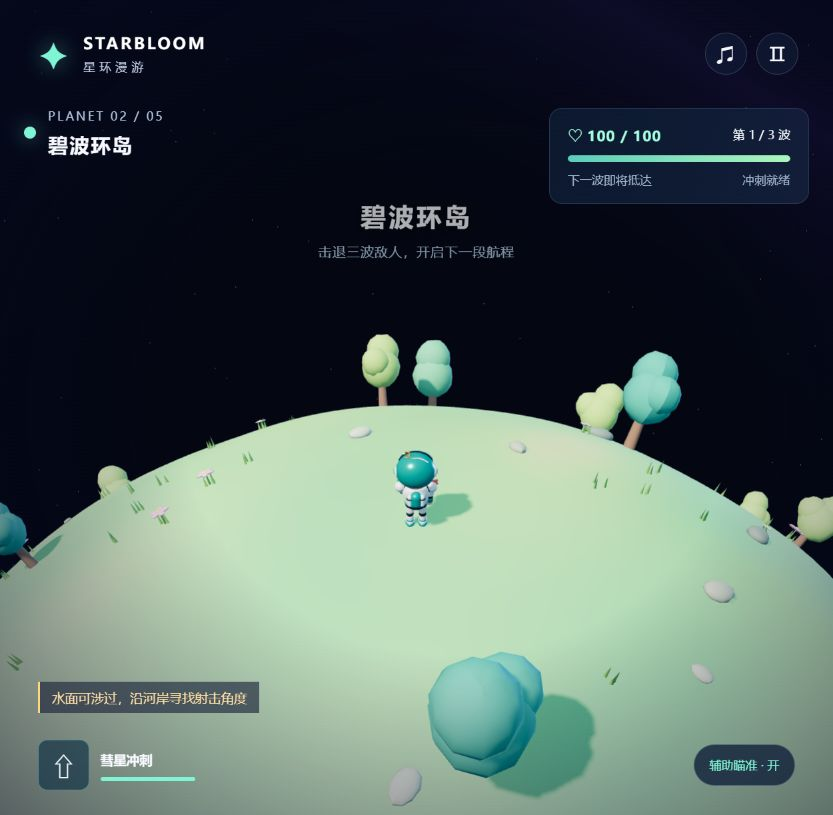
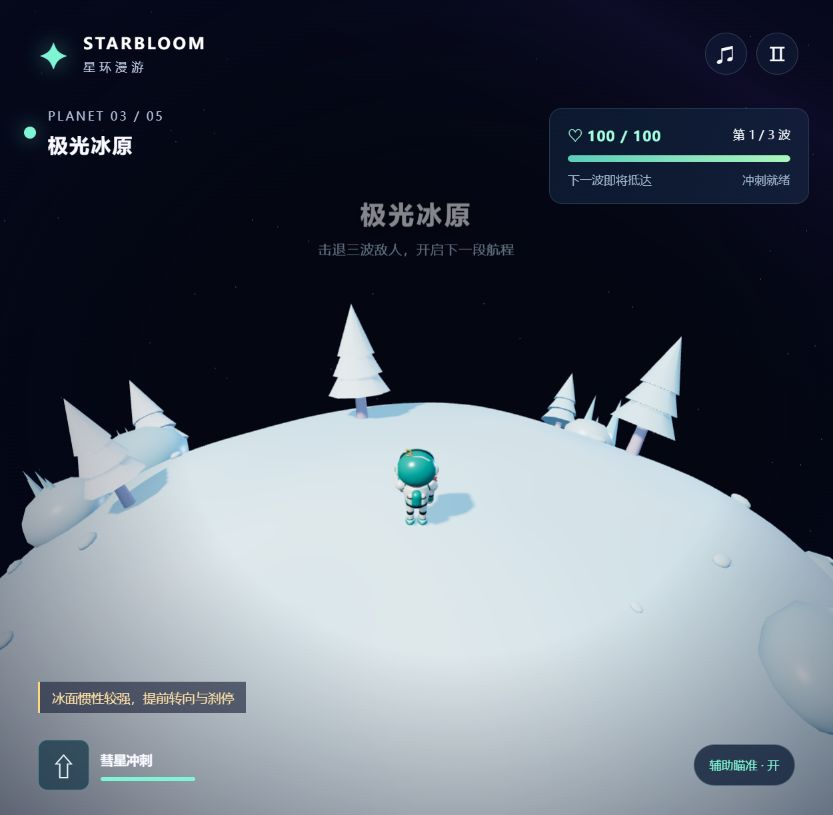
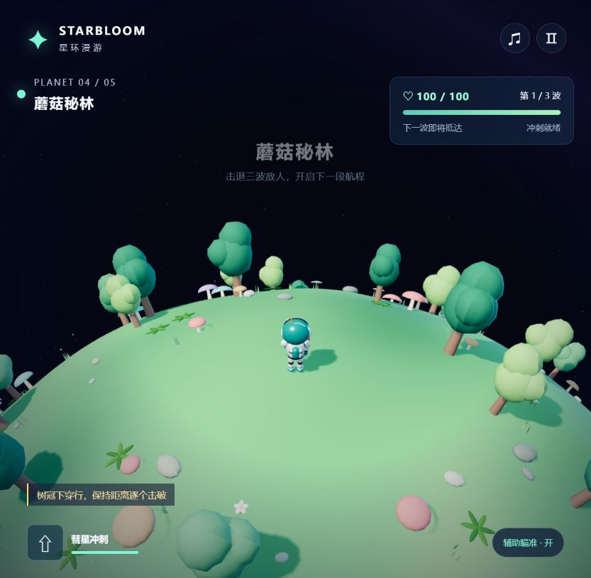
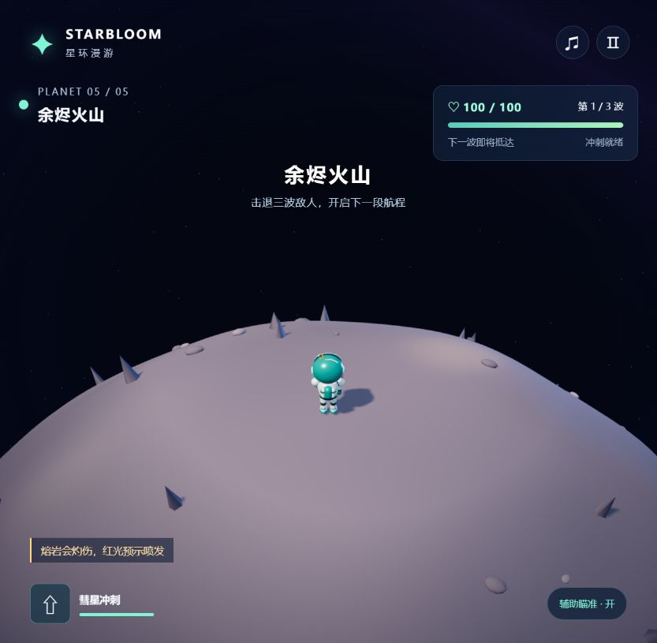

先看一段星际航程
02:30 / 1280 × 720 / 中文旁白与字幕
画面取自实际浏览器 WebGL 游戏帧，由自动操作完成五球、十五波、150 次击破。剪辑保留正常战斗速度，界面停留用于讲解；视频叠加了游戏状态、中文合成旁白与字幕。完整录制约 200 秒，成片约 150 秒。视频录于音乐升级前；当前试玩版已加入原创音效、五种星球环境音和独立音量控制。
下载介绍视频 MP4 · 下载中文字幕 · 查看录制状态记录
地面会弯曲，冒险会继续
《星环漫游 · STARBLOOM ODYSSEY》是一款原创 3D 球面重力射击肉鸽。你控制一名小宇航员，沿球面的弧线移动；角色始终贴着地面，镜头跟随当前位置转动，熟悉的走位因此多了一点小星球探索的趣味。
游戏不需要安装。打开在线试玩链接，点击「开始航程」即可进入花海星原；也可以从星图中选择任意一颗星球作为起点。电脑键鼠体验优先，手机有触屏摇杆、射击和冲刺按钮。
三波战斗，找到自己的节奏
追击甲虫、远程花炮和冲锋重甲会轮流登场。按住射击，让辅助瞄准寻找附近敌人；走位保持距离，在危险时用彗星冲刺穿过敌群。
每一次三选一，都会改变航程
清理一颗星球后回复 18 生命，并从三项随机强化中选择一项。八项强化覆盖伤害、射速、散射、生命、冲刺、击杀回复、贯穿与移速，可重复获得并叠加。本局强化会随你进入下一颗星球。
点火，跃向下一颗星
选好强化后，在星图里决定下一个未清理的目的地。飞行转换约 4.6 秒；五颗星球全部净化后获胜，失败也能重新选择起点，再试一套强化组合。
五颗星球，五种风景
以下均为原始游戏界面的浏览器截图





起飞前，记住这些操作
默认开启辅助瞄准，开始航程后默认有声；右上角可分别调节战斗音效与环境音
| W A S D / 方向键 | 沿球面移动 |
| 鼠标左键 / Space | 按住持续射击 |
| Shift | 彗星冲刺，短暂无敌 |
| Q / E | 围绕当前位置转动镜头 |
| Esc / M | 暂停或继续 / 切换音效 |
| 手机触屏 | 左侧摇杆移动，右侧按钮射击与冲刺 |
需要支持 WebGL 2 的现代浏览器。源码自带 Three.js，无需 API 密钥、后端或构建；本地可使用 Node.js HTTP 服务启动。